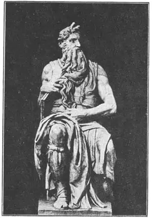

47
FOUR IN ONE
四合一

TO-DAY there is no famous sculptor who is also a famous painter. But in 1475 was born a man who became world famous as a sculptor, as a painter, and as an architect. He also was a poet and wrote good verses that are still published. Not only that, but he is considered the greatest artist of the Renaissance. Many people call him the greatest sculptor since Phidias.
The name of this wonderful genius was Buonarroti. Have you ever heard before of Buonarroti? Very few people know him by that name. He is known to us as Michelangelo and even this name is written in three different ways—Michelangelo, Michael Angelo, and Michelagnolo. Michelangelo was trained as a sculptor in marble and he always spoke of himself as a sculptor in spite of the fact that his most famous works are the paintings in the Sistine Chapel in Rome. As a boy he carved a statue in snow that greatly pleased one of the famous Medici family, the Duke of Florence. The boy was permitted to study the old Greek and Roman statues collected by the duke, who later gave him work to do.
When Michelangelo was still a young man, he carved in marble a wonderful statue called the Pietà. This piece of work shows Mary the mother of Jesus holding her dead Son across her lap after His crucifixion. Some people like it better than Michelangelo’s other works because it is calmer, more quiet and tranquil, than the statues he did afterward.
Some time after making the Pietà, Michelangelo was able to do a piece of work that made him famous throughout Italy. There lay in Florence a huge block of marble that an earlier sculptor had begun to work on, but had been unable to finish because the marble was so long and narrow.
Michelangelo offered to make a statue out of this block of marble. He was given permission to carve it and went to work. The bloek was set up on end and inclosed with a fence so Michelangelo could work in peace. In three years he had finished. People came in crowds to see what he had done.
It was a colossal statue eighteen feet high, showing David with his sling ready to fight Goliath the giant. Strange to say, every one in Florence called the statue “The Giant,” although it was of a man who killed a giant. It is gigantic in size. It weighs nine tons.
Michelangelo was a very careful student of anatomy. Anatomy is the study of the muscles and other parts of the body. He studied the bodies of people and even cut up dead bodies so he could learn about the muscles under the skin that would make a statue look lifelike. He knew so much about muscles that he carved some of his statues in strained and unusual positions, showing the proper play of muscles under the skin.
For the tomb of one of the popes, Michelangelo carved a statue of Moses. Of course he did not know what Moses really looked like. He had no pictures of Moses to go by, so the Moses he carved is the sculptor’s idea of what a man like Moses ought to look like. Michelangelo carved horns on his Moses! You can see them in the picture. You remember, perhaps, how the Bible says the face of Moses shone with light when he came down from Mount Sinai? In early Italian translations of the Bible, the rays of light coming from the head of Moses were called by the translators “horns.” And for this reason people of Michelangelo’s time thought Moses had horns. The statue is forceful, majestic, powerful. All who see it remember it. Travelers have said it is like seeing Niagara Falls or the ocean or a storm at sea.

No.47 MOSES（《摩西》） MICHELANGELO（米开朗基罗 制）
As famous as Michelangelo’s Moses are the groups of statues that he made for the tombs of two members of the Medici family. These tombs are in the Medicis’ private chapel, in the church of San Lorenzo. Michelangelo placed two figures, a man and a woman, on each tomb. Above these, in a niche in the wall, was placed a statue of the man whose tomb it was. One of these portrait statues is known as the Thinker and the other as the Warrior. The two figures on one of the tombs are known as Morning and Evening and those on the other as Day and Night.
Michelangelo lived to be eighty-nine and died in 1564.
Strange to say, sculpture got worse instead of better after Michelangelo, and it was many years before it began again to improve.
【中文阅读】
当今世界上有没有哪个人既是著名的雕刻家，又是著名的画家。但1475年就诞生了这么个人。他后来成为著名的雕刻家、画家和建筑家。他还写诗，许多优美的诗句至今仍在出版。不仅如此，他还被认为是文艺复兴时期最伟大的艺术家。许多人认为他是继菲迪亚斯后最伟大的雕刻家。
这位了不起的天才名叫邦纳罗蒂。你以前听说过邦纳罗蒂吗？相信几乎没人知道这名字。我们一般把这位天才叫做米开朗基罗，但这名字至少有三种写法——“米开朗基罗”、“米开·安基罗”、“米开拉侬罗”。米开朗基罗受过大理石雕刻的训练。尽管他的大多数优秀作品都是罗马西斯廷教堂绘画，但他总以雕刻家自居。小时候，米开朗基罗刻过一个雪人雕像，深受一名门望族——佛罗伦萨梅第奇家族大公的喜爱。公爵让这孩子观摩学习他收藏的古希腊和古罗马雕像，后来还给他介绍工作。
米开朗基罗年轻时，曾用大理石刻了一座精美雕像，叫《圣母哀悼基督》。这件作品展示了耶稣在十字架上被钉死后，圣母玛利亚抱着他的尸体时的场景。有人更喜欢米开朗基罗的这件作品，觉得这座雕像比他后来刻的雕像更显得宁静安详。
在完成《圣母哀悼基督》一段时间后，米开朗基罗又开始雕刻另外一件作品，这件作品使他在意大利声名大振。佛罗伦萨有块巨型大理石。早些时候就有雕刻家在上面做雕刻。因为这块大理石又长又窄，所以雕刻根本没能完成。
后来，米开朗基罗主动请缨，想用它刻一座雕像。在获得许可后，他便开始工作。他先把这大理石竖起来，再用栅栏围住，以便安心工作。三年后雕像完成。人们蜂拥而至，要看他雕的是什么。
这是一座巨型雕像，高18英尺，展示了大卫手拿甩石的机弦迎战巨人歌利亚的场景。奇怪的是，佛罗伦萨人都叫这雕像《巨人》，虽然它刻画的是大卫杀死巨人的情景。雕像巨大，重9吨。
米开朗基罗还专门学习过解剖学。解剖学是研究人体肌肉及其他人体部位的学 科。米开朗基罗研究人体，甚至解剖尸体，来了解人们皮肤下的肌肉，以求雕像达到逼真。他对人体肌肉了如指掌，甚至还刻了一些特殊摆姿、肌肉紧拉的雕像，以示人们皮肤下肌肉的构成。
米开朗基罗还为某位教皇的陵墓刻了一座摩西像。当然，他并不知道摩西的长相，也没有图片可作参考，所以就按自己心中摩西的样子进行雕刻。他竟然在摩西头上刻了两只角！这在图片上可以看到。或许还记得《圣经》上的话，当摩西从西奈山下来时，脸面发光。在意大利早期的《圣经》译本中，摩西头上的光束被译成了“角”。米开朗基罗那时代的人因此便以为摩西头上长角。这座雕像雄伟有力。游客说它像尼亚加拉大瀑布或像大海或像海上风暴，使人见而难忘。
同摩西像一样著名的还有一组雕像，是专为梅第奇家族两位成员的墓穴雕刻的。这些墓穴现在位于圣罗伦佐教堂内梅第奇家族的私人小教堂里。米开朗基罗分别在两座坟墓上安置了一男一女雕像。在墙上的壁龛里还放了死者的雕像。两座半身雕像分别叫《沉思者》和《勇士》。其中一人的墓上图案叫“早晨和傍晚”，另一人的墓上图案叫“白天和黑夜”。
米开朗基罗活了89岁，1564年去世。
奇怪的是，米开朗基罗之后，意大利的雕像并没有变得越来越好，反而越来越糟。直到很多年后，情况才有所改观。